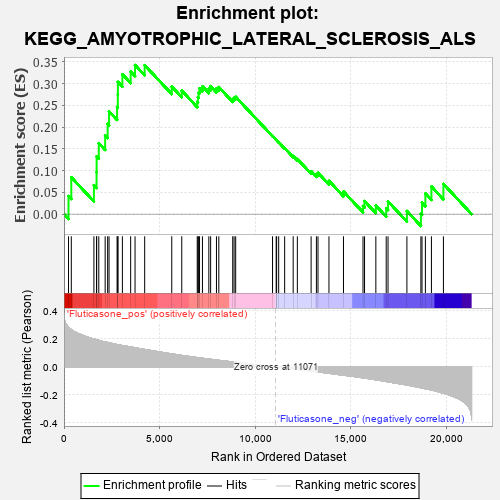
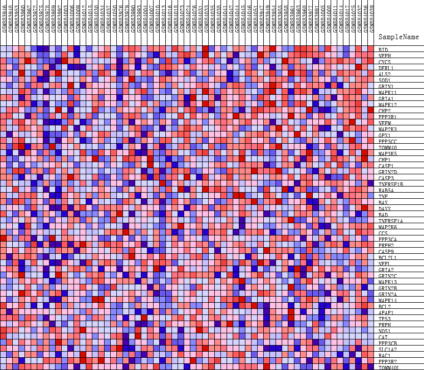
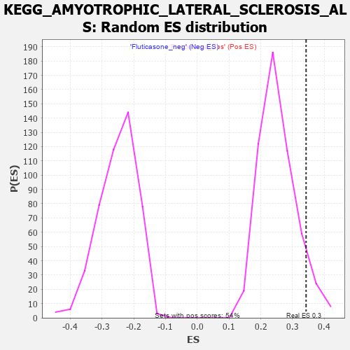

| | | Dataset | GSEA_expr_Flu.GSEA_timepoint.cls#Fluticasone |
| Phenotype | GSEA_timepoint.cls#Fluticasone |
| Upregulated in class | Fluticasone_pos |
| GeneSet | KEGG_AMYOTROPHIC_LATERAL_SCLEROSIS_ALS |
| Enrichment Score (ES) | 0.34266943 |
| Normalized Enrichment Score (NES) | 1.3513741 |
| Nominal p-value | 0.08598131 |
| FDR q-value | 1.0 |
| FWER p-Value | 0.877 |
Table: GSEA Results Summary

Fig 1: Enrichment plot: KEGG_AMYOTROPHIC_LATERAL_SCLEROSIS_ALS
Profile of the Running ES Score & Positions of GeneSet Members on the Rank Ordered List
| PROBE | DESCRIPTION
(from dataset) | GENE SYMBOL | GENE_TITLE | RANK IN GENE LIST | RANK METRIC SCORE | RUNNING ES | CORE ENRICHMENT | | 1 | BID | NA | | | 236 | 0.280 | 0.0415 | Yes |
| 2 | NEFH | NA | | | 381 | 0.266 | 0.0847 | Yes |
| 3 | CYCS | NA | | | 1563 | 0.199 | 0.0666 | Yes |
| 4 | DERL1 | NA | | | 1702 | 0.194 | 0.0965 | Yes |
| 5 | ALS2 | NA | | | 1706 | 0.194 | 0.1327 | Yes |
| 6 | SOD1 | NA | | | 1818 | 0.190 | 0.1631 | Yes |
| 7 | GRIN1 | NA | | | 2151 | 0.178 | 0.1808 | Yes |
| 8 | MAPK11 | NA | | | 2281 | 0.174 | 0.2074 | Yes |
| 9 | GRIA1 | NA | | | 2354 | 0.172 | 0.2363 | Yes |
| 10 | MAPK12 | NA | | | 2774 | 0.159 | 0.2464 | Yes |
| 11 | CHP2 | NA | | | 2813 | 0.158 | 0.2744 | Yes |
| 12 | PPP3R1 | NA | | | 2817 | 0.158 | 0.3039 | Yes |
| 13 | NEFM | NA | | | 3052 | 0.152 | 0.3215 | Yes |
| 14 | MAP2K3 | NA | | | 3484 | 0.142 | 0.3278 | Yes |
| 15 | GPX1 | NA | | | 3713 | 0.137 | 0.3427 | Yes |
| 16 | PPP3CC | NA | | | 4217 | 0.125 | 0.3424 | No |
| 17 | TOMM40 | NA | | | 5632 | 0.092 | 0.2932 | No |
| 18 | MAP3K5 | NA | | | 6155 | 0.081 | 0.2839 | No |
| 19 | CHP1 | NA | | | 6964 | 0.066 | 0.2583 | No |
| 20 | CASP1 | NA | | | 7001 | 0.065 | 0.2689 | No |
| 21 | GRIN2D | NA | | | 7038 | 0.065 | 0.2793 | No |
| 22 | CASP3 | NA | | | 7084 | 0.064 | 0.2892 | No |
| 23 | TNFRSF1B | NA | | | 7236 | 0.061 | 0.2936 | No |
| 24 | RAB5A | NA | | | 7570 | 0.056 | 0.2884 | No |
| 25 | TNF | NA | | | 7664 | 0.054 | 0.2942 | No |
| 26 | BAX | NA | | | 7969 | 0.049 | 0.2890 | No |
| 27 | DAXX | NA | | | 8092 | 0.046 | 0.2920 | No |
| 28 | BAD | NA | | | 8819 | 0.035 | 0.2644 | No |
| 29 | TNFRSF1A | NA | | | 8890 | 0.034 | 0.2674 | No |
| 30 | MAP2K6 | NA | | | 8973 | 0.032 | 0.2696 | No |
| 31 | CCS | NA | | | 10900 | 0.003 | 0.1795 | No |
| 32 | PPP3CA | NA | | | 11090 | -0.000 | 0.1707 | No |
| 33 | PRPH2 | NA | | | 11113 | -0.001 | 0.1697 | No |
| 34 | CASP9 | NA | | | 11221 | -0.002 | 0.1651 | No |
| 35 | BCL2L1 | NA | | | 11533 | -0.007 | 0.1518 | No |
| 36 | NEFL | NA | | | 11979 | -0.014 | 0.1335 | No |
| 37 | GRIA2 | NA | | | 12197 | -0.018 | 0.1267 | No |
| 38 | GRIN2C | NA | | | 12916 | -0.030 | 0.0985 | No |
| 39 | MAPK13 | NA | | | 13193 | -0.034 | 0.0920 | No |
| 40 | GRIN2B | NA | | | 13276 | -0.036 | 0.0948 | No |
| 41 | GRIN2A | NA | | | 13849 | -0.046 | 0.0765 | No |
| 42 | MAPK14 | NA | | | 14608 | -0.059 | 0.0520 | No |
| 43 | BCL2 | NA | | | 15629 | -0.078 | 0.0187 | No |
| 44 | APAF1 | NA | | | 15709 | -0.080 | 0.0300 | No |
| 45 | TP53 | NA | | | 16300 | -0.092 | 0.0195 | No |
| 46 | PRPH | NA | | | 16842 | -0.104 | 0.0137 | No |
| 47 | NOS1 | NA | | | 16937 | -0.106 | 0.0292 | No |
| 48 | CAT | NA | | | 17923 | -0.129 | 0.0071 | No |
| 49 | PPP3CB | NA | | | 18654 | -0.149 | 0.0008 | No |
| 50 | SLC1A2 | NA | | | 18713 | -0.151 | 0.0263 | No |
| 51 | RAC1 | NA | | | 18889 | -0.156 | 0.0474 | No |
| 52 | PPP3R2 | NA | | | 19205 | -0.165 | 0.0635 | No |
| 53 | TOMM40L | NA | | | 19832 | -0.188 | 0.0694 | No |
Table: GSEA details [plain text format]

Fig 2: KEGG_AMYOTROPHIC_LATERAL_SCLEROSIS_ALS
Blue-Pink O' Gram in the Space of the Analyzed GeneSet

Fig 3: KEGG_AMYOTROPHIC_LATERAL_SCLEROSIS_ALS: Random ES distribution
Gene set null distribution of ES for KEGG_AMYOTROPHIC_LATERAL_SCLEROSIS_ALS